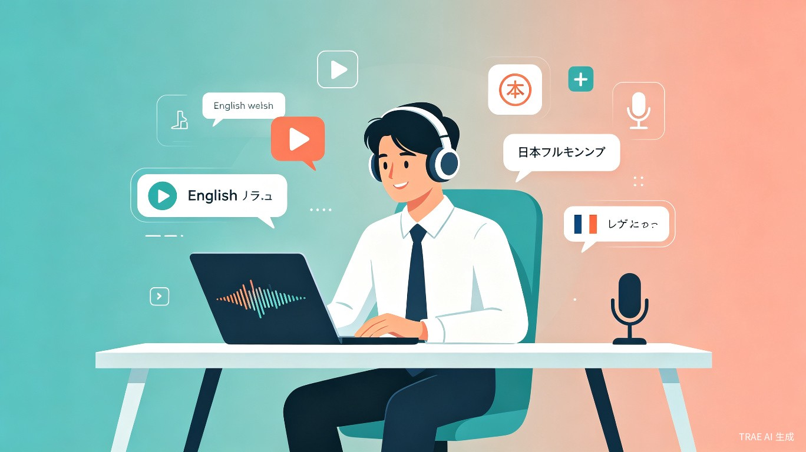
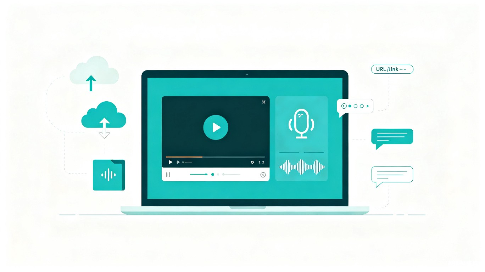
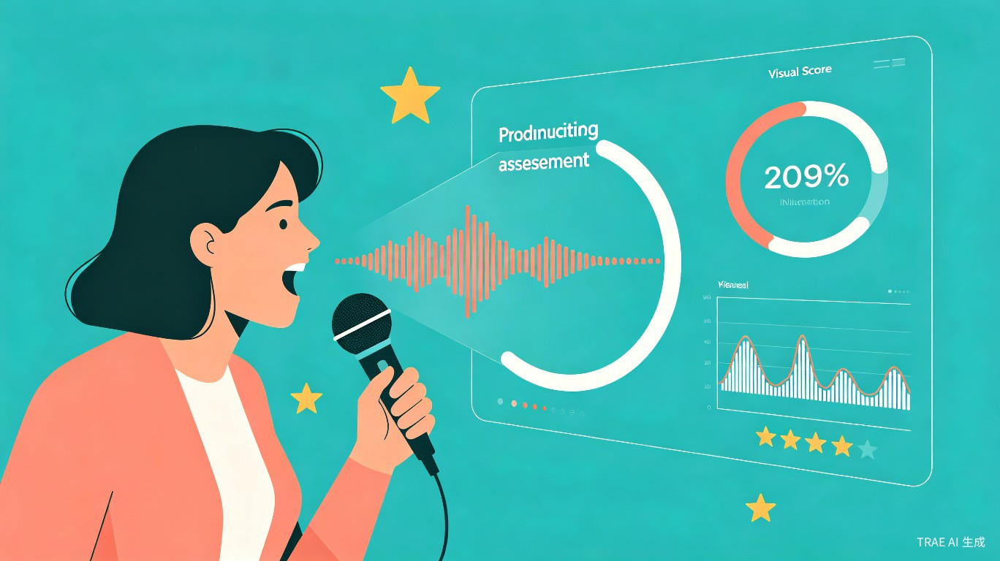

在全球化日益深入的今天，外语能力已成为职场竞争力的核心要素之一。然而，传统外语学习工具普遍存在听力材料单一、发音反馈滞后、学习路径僵化等痛点。Seashore 应运而生，致力于打造一款以 AI 驱动的智能外语学习平台，聚焦听力训练与发音评测两大核心场景，帮助学习者突破"听得懂、说得准"的语言瓶颈。
本项目参加 TRAE Builder 大赛 —— 学习工作赛道，围绕"造个新解法"的主题，探索技术与学习场景深度融合的创新路径。
备考雅思、托福、日语能力考等标准化考试，需要大量听力练习与口语反馈。
需要提升商务英语、日语等外语沟通能力，学习时间碎片化，追求高效。
通过播客、影视剧、YouTube 等内容自主学习，需要灵活的内容导入与评测工具。
Seashore 围绕"输入-训练-反馈"的学习闭环，构建了三大核心功能模块，全面覆盖听力与发音训练场景。
打破传统听力材料受限的瓶颈，Seashore 支持 三种内容输入方式，让学习者可以使用任何感兴趣的素材进行训练：
播放器内置 AB 复读、语速调节（0.5x-2x）、逐句精听 等功能，满足不同阶段的学习需求。

基于语音识别与声学模型，Seashore 提供 多维度发音评测，帮助学习者精准定位发音问题：
评测结果生成个性化改进建议，并推荐针对性练习内容。

自动生成周/月学习报告，统计学习时长、完成率、发音进步曲线等核心指标。
基于评测数据智能识别发音薄弱环节，自动生成针对性训练计划。
根据学习进度与兴趣偏好，推荐合适的听力素材与练习难度。
Seashore 采用前后端分离架构，充分利用现代 Web 技术与 AI 能力，确保系统的可扩展性与用户体验。
flowchart TB
subgraph Frontend["前端层 (Vue + TypeScript)"]
A[Web 播放器组件] --> B[音频处理模块]
A --> C[录音与波形组件]
D[用户仪表盘]
end
subgraph Backend["后端层 (Node.js / Python)"]
E[内容解析服务] --> F[YouTube/B站 API]
E --> G[文件存储服务]
H[TTS 引擎] --> I[Azure / Google TTS]
J[评测引擎] --> K[语音识别模型]
J --> L[声学评分模型]
end
subgraph Data["数据层"]
M[(PostgreSQL)]
N[(Redis 缓存)]
O[对象存储 OSS]
end
Frontend <-->|REST / WebSocket| Backend
Backend --> Data
项目采用敏捷开发模式，分四个阶段推进，确保核心功能快速验证与持续迭代。
完成基础音频播放器（上传播放、AB复读、变速）、文字转语音接口对接、基础录音功能。实现最简可用的听力训练闭环。
集成 YouTube/Bilibili 嵌入播放器，实现链接解析与字幕提取。接入专业发音评测 API，完成发音评测核心算法与评分展示。
优化播放器交互细节，实现学习进度追踪、薄弱点分析、智能推荐。完善用户仪表盘与数据可视化。
全链路测试与 bug 修复，性能优化，编写技术文档与用户手册，准备大赛提交材料。
| 功能模块 | 优先级 | 复杂度 | 预期完成 |
|---|---|---|---|
| 本地音视频上传播放 | P0 | 低 | Week 1 |
| 文字转语音生成 | P0 | 低 | Week 1 |
| 录音与波形可视化 | P0 | 中 | Week 2 |
| 第三方链接嵌入播放 | P1 | 中 | Week 3 |
| AI 发音评测引擎 | P0 | 高 | Week 4 |
| 学习数据追踪 | P1 | 中 | Week 5 |
| 智能内容推荐 | P2 | 高 | Week 6 |
与传统外语学习 App 相比，Seashore 的核心创新在于 内容输入的开放性与评测反馈的即时性。用户不再受限于预设课程，可以将日常消费的播客、视频、新闻转化为训练材料，真正实现"在兴趣中学习"。
| 维度 | 传统 App（如每日英语听力） | Seashore |
|---|---|---|
| 内容来源 | 平台预设素材库 | 用户自主上传/链接/文本，无限扩展 |
| 发音反馈 | 简单跟读，无智能评分 | AI 多维度评测，音素级纠错 |
| 个性化 | 固定学习路径 | 基于薄弱点的动态推荐 |
| 平台依赖 | 需安装 App | Web 端即开即用，跨平台 |
在教育资源分布不均的背景下，Seashore 通过技术手段 降低高质量语言学习的门槛。用户无需购买昂贵的课程，利用互联网上丰富的免费内容即可进行系统化训练。项目积极响应国家"教育数字化"战略，助力终身学习体系建设。
基础功能免费，高级评测报告、无限存储、专属推荐等通过会员订阅变现。
与语言培训机构、高校合作，提供 SaaS 化教学工具与学情分析系统。
将发音评测引擎封装为 API，供第三方教育应用集成调用。
本项目由个人开发者 Chris 使用 TRAE IDE 独立完成，从需求分析、UI 设计到前后端开发全流程依托 TRAE 的 AI 辅助编程能力。
所有代码、设计文档及演示材料均为原创，未在其他赛事中获奖或公开发布。